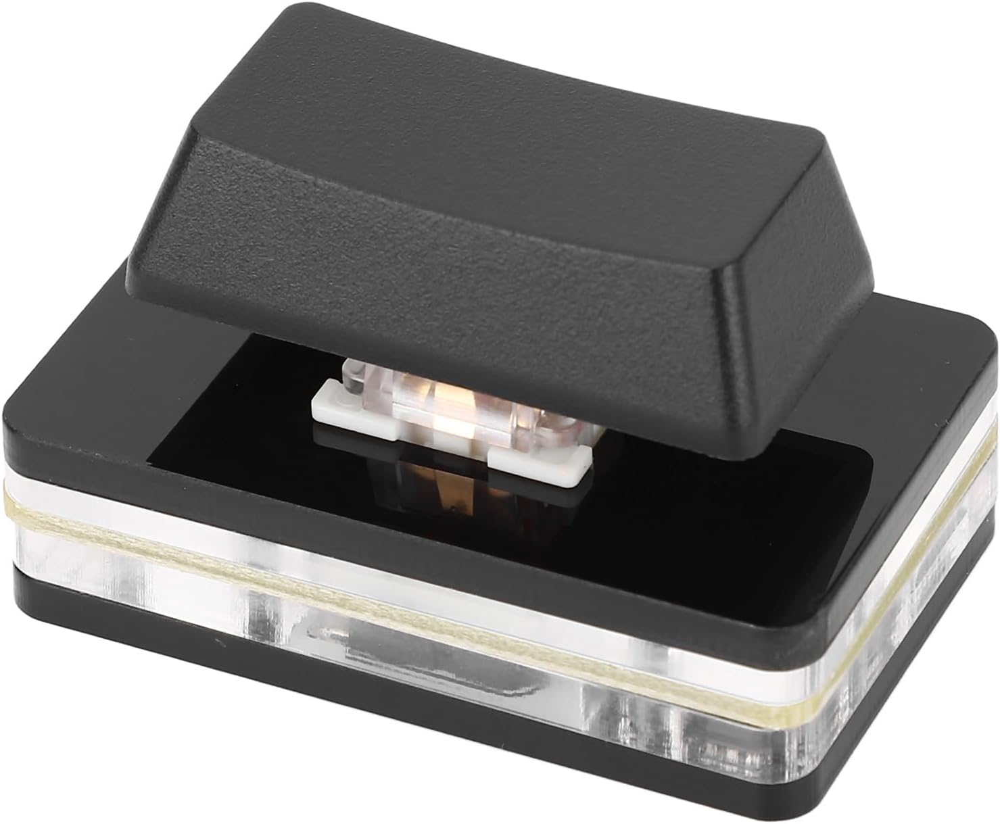
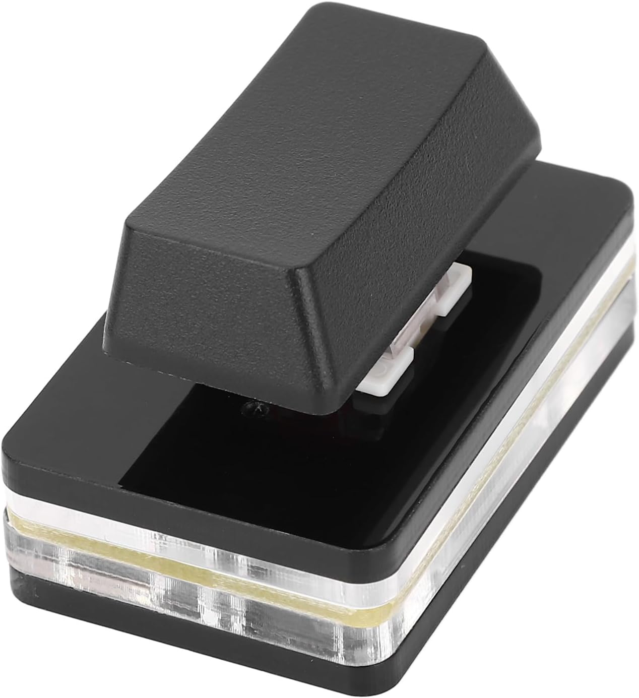
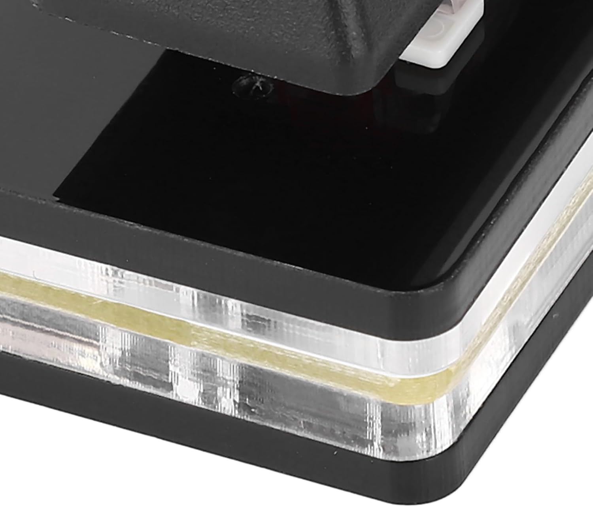
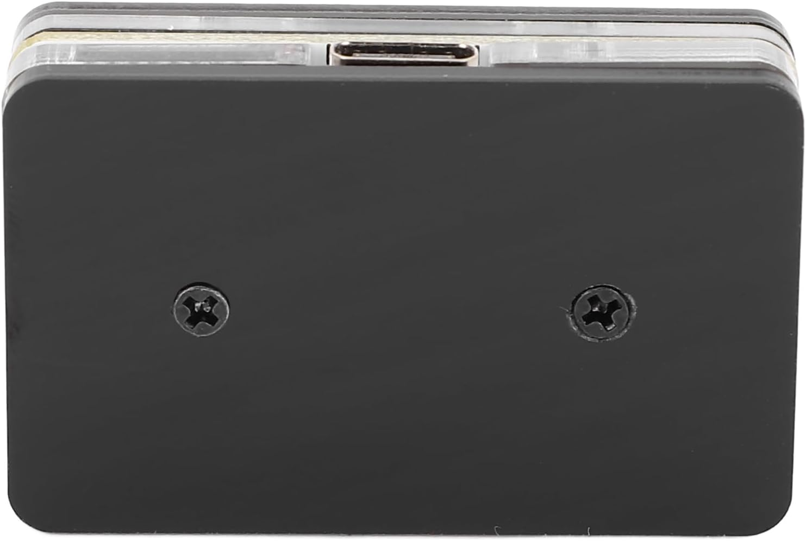
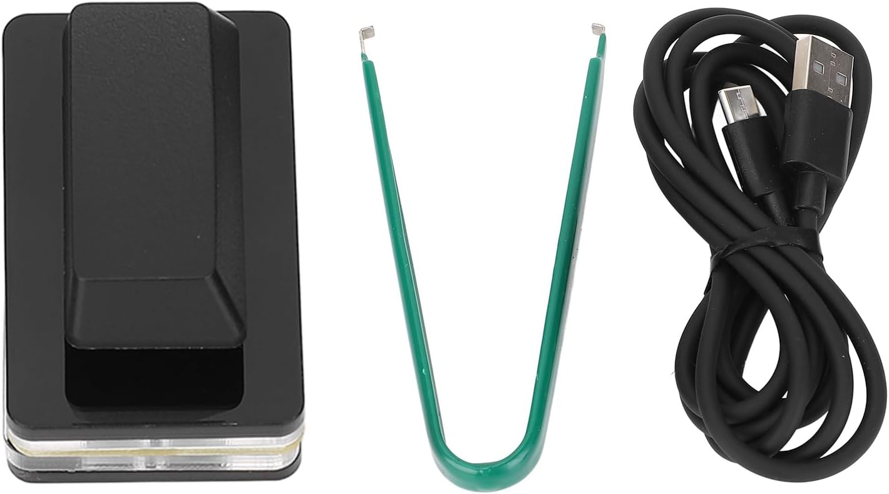

Tools to reprogram this specific type of unbranded Chinese single key RGB USB-C keyboard as found on eBay, Amazon and AliExpress.

English language online reprogramming tool
(translated from original found at https://xuanfang.co/xfp-web)
Download mirror for Windows programming tool.
Download mirror for macOS programming tool.
Following details as supplied by an AliExpress seller of these keyboards:
Hello friend， This is the relevant information of our product, Keyboard driver free: https://xuanfang.co/xfp-web Keyboard usage instructions: https://space.bilibili.com/4551103/channel/seriesdetail?sid=3560678 Keyboard driver: Instructions and software download link: WIN system: http://xf.xuanfang.co/xfp-win.zip MAC System: http://xf.xuanfang.co/xfp-mac.zip You need to operate according to the requirements.



